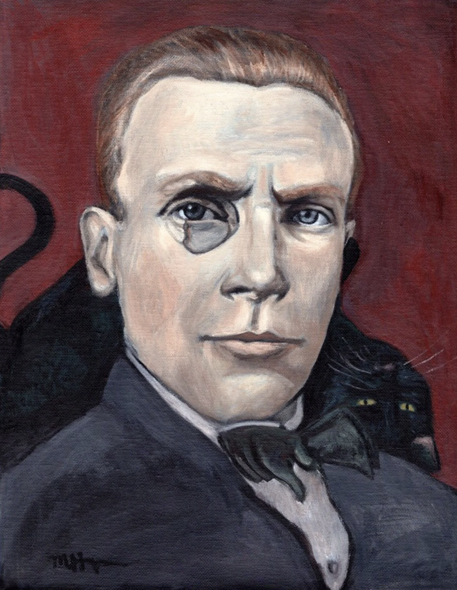

Mikhail Bulgakov

Heart of a Dog
(1924)
Bulgakov works as a playwright for the Moscow Arts Theater (MAT).
His play "The Days of the Turbins" (1925)
(the most successful play of the decade)
Master & Margarita
(1940)